Position and velocity analysis
The mechanical system there has 5 generalized coordinates and 3 DOF. In this analysis theta2 and theta3 are chosen as dipendent variables while s2,s3 and theta1 are the independent.
| > | Phi := [Phi1,Phi2]: <%>;
q_vars := [s__2(t),theta__1(t),s__3(t),theta__2(t),theta__3(t)]; qI_vars := [theta__1(t),s__2(t),s__3(t)]; qD_vars := [theta__2(t),theta__3(t)]; |
| 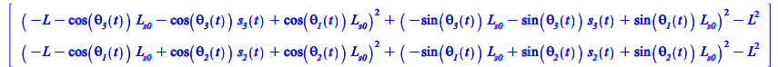 | |
| 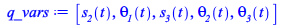 | |
| 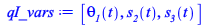 | |
| 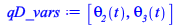 | (3.1.1) |
Position analysis: analytical
In this case the solution can be found analitically. The two solutions found correspond to the two mechanical system configurations.
| > | sol_kine_all := solve(Phi,qD_vars,explicit=true):
nops(%); <sol_kine_all[1]>, <sol_kine_all[2]>; |
| 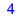 | |
| 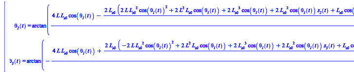 | (3.1.2) |
Compute velocity ratios:
Here we compute velocity ratios that are necessary for the virtual displacements
| > | JPhi_qD := jacobianF(Phi,qD_vars);
JPhi_qI := jacobianF(Phi,qI_vars); taus := simplify( -MatrixInverse(JPhi_qD).JPhi_qI ); Velocities of dependent coordinates taus.<diff(qI_vars,t)>; vel_qD_vars := [seq(diff(qD_vars[i],t)=%[i],i=1..nops(qD_vars))]: |
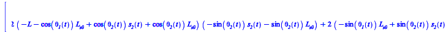 |
|
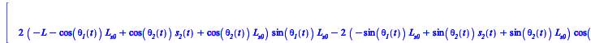 |
|
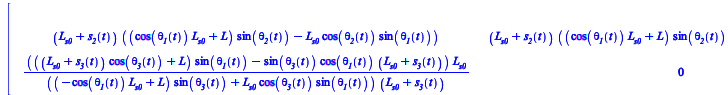 |
|
| 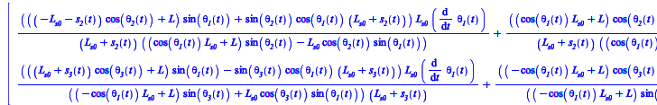 | (3.1.3) |
Kinematics of points where weights, external forces are applied
| > | G1 := -r1:
G2 := rL__1-r2+hp2: G3 := rL__2-r3+hp3: P0 := hR: P2 := rL__1: P3 := rL__2: G1,G2,G3,P0,P2,P3; |
| 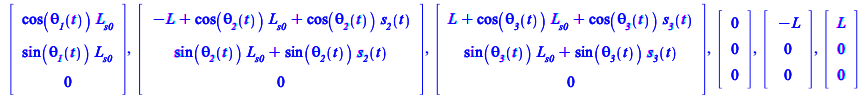 | (3.1.4) |
Virtual displacements occur at frozen time.
Formally the virtual displacements should be computed via the velocity ratios.
Here we compute the velocities which are then used as virtual velocities.
| > | VG1:= diffF(G1,t):
VG2:= diffF(G2,t): VG3:= diffF(G3,t): VP0:= diffF(P0,t): VP2:= diffF(P2,t): VP3:= diffF(P3,t): |